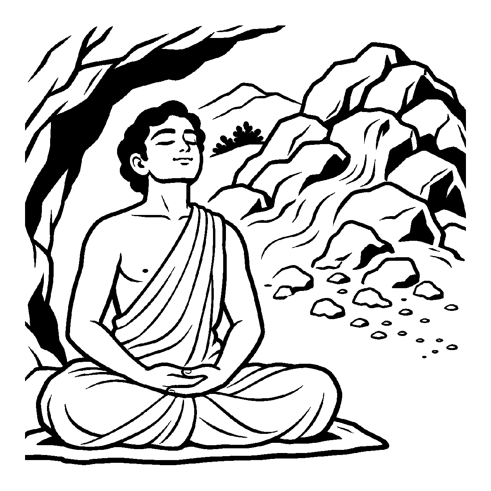

આંબાના ઝાડ પર લાગેલી કાચી કેરીને કુદરતી રીતે પાકતાં કદાચ મહિનાઓ લાગે, પરંતુ એક હોશિયાર વેપારી તે કાચી અંબિયાને ઉતારીને સૂકા ઘાસની ગરમ પેટીમાં વ્યવસ્થિત ગોઠવી દે છે; ઘાસની અંદર પેદા થતી હૂંફના કારણે તે કેરી પોતાના કુદરતી સમય કરતાં ઘણા દિવસો વહેલી, અકાળે જ પાકીને રસાળ અને મધમીઠી બની જાય છે! તેવી જ રીતે કુંભાર જ્યારે ચાકડા પરથી માટીના કાચા વાસણો ઉતારે છે, ત્યારે તેને તડકામાં સૂકાવા મહિનાઓ નથી આપતો; તે તેને ધગધગતા નિભાડામાં મૂકી પ્રચંડ અગ્નિ આપે છે અને ગણતરીના કલાકોમાં તે વાસણો પાકાં રણકતાં બની જાય છે! તેવી જ રીતે આત્મા જે કર્મોને ભોગવવા વર્ષો કે ભવો લાગવાના હતા, તેને ઉગ્ર તપ, ધ્યાન અને સંયમની પ્રચંડ આંતરિક ઉષ્મા દ્વારા સમય પહેલાં જ ઉદીરણા કરીને ખપાવી દે છે. કર્મોના આવા અસમય પરિપાકનું નિરૂપણ કરતો દ્રષ્ટિકોણ એટલે 'અકાલનય'.
અકાલનયનો આ ઉદાહરણ સમય પહેલાં થતી પરિણતિ કે ઉદીરણાની ચર્ચા કરે છે; તેને કર્મને ક્ષણવારમાં ભસ્મીભૂત કરી દેવાની ખાતરી તરીકે સમજવી નહીં. જૈન કર્મવિચારમાં ઉદીરણા એટલે બંધાયેલાં કર્મનું નિર્ધારિત સમય કરતાં વહેલું ઉદયમાં આવવું—અર્થાત્ તેનું ફળ વહેલું અનુભવવું. કયા કર્મમાં, કઈ સ્થિતિમાં અને કઈ મર્યાદામાં આવું બને તે શાસ્ત્રીય નિયમો પર આધારિત છે; સામાન્ય સંકલ્પથી કર્મ તરત ખપી જાય એવો દાવો કરવો યોગ્ય નથી.
આ નય સાધકમાં ઉગ્ર પુરુષાર્થનું વીર્ય જગાડી તેને મોક્ષમાર્ગમાં ઝડપથી આગળ ધપાવે છે.
ઘાસ વિષે કેરી પાકે, સમય પૂર્વે રસ થાય;
અકાલનયના તેજથી, કર્મ ઉદીરણા થાય.
તપ અગ્નિ પ્રગટે ઉરે, ભસ્મ બને ભવ ફંદ;
કાળ તણી સીમા ટળે, પ્રગટે પરમાનંદ.
સાધકમાં ઉગ્ર પુરુષાર્થનું વીર્ય જગાડી તેને મોક્ષમાર્ગમાં ઝડપથી આગળ ધપાવે છે.

ધર્મગીરિની તળેટીમાં કૌશિક નામનો એક યુવાન સાધક વર્ષોથી ગુફામાં ધ્યાનમાં બેઠો હતો. તેણે શાસ્ત્રોમાં વાંચ્યું હતું કે તેના અગાઉના જન્મોના ભયંકર પાપકર્મો હજુ કરોડો વર્ષો પછી ઉદયમાં આવશે. તે રોજ ચિંતા કરતો: "મારે આ કર્મો ભોગવવા માટે હજી કેટલા ભવો સુધી ભટકવું પડશે? શું હું ક્યારેય આ જન્મમાં મુક્ત નહીં થઈ શકું? મારે કાળની આ ધીમી ગતિમાંથી છૂટીને તરત જ મુક્તિ પામવી છે!" કૌશિકના અંતરમાં ભવોના બંધનોને ઝડપથી કાપી નાખવાની ઉગ્ર પિપાસા જાગી હતી.
તે સમયે પર્વત પરથી આવેલા એક વીતરાગી સાધકે કૌશિકની મૂંઝવણ સાંભળી કહ્યું: "કૌશિક, અકાલનયની ચર્ચા સમય પહેલાં થતી પરિણતિને સમજાવે છે. કેરીને ઘાસમાં રાખવાથી તે વહેલી પાકે છે—આ ઉપમા માત્ર પ્રક્રિયાનો સમય બદલાય છે તે સમજાવે છે. કર્મવિષયક ઉદીરણામાં પણ કર્મનું ફળ વહેલા ઉદયમાં આવે અને અનુભવાય છે; તે ફળ આપ્યા વિના આપમેળે નષ્ટ થઈ જાય છે એવો અર્થ નથી. તપ, સંયમ અને ધ્યાનનું મૂલ્ય છે, પણ તેનો ચોક્કસ કર્મફળ સાથેનો સંબંધ શાસ્ત્રીય મર્યાદા વિના નક્કી ન કરીએ." કૌશિકે આ વાતને ચમત્કારની ખાતરી નહીં, પણ સમય અને પરિણતિ વિશેની સાવચેત સમજ તરીકે ગ્રહણ કરી અને પોતાની સાધનામાં સમતાપૂર્વક આગળ વધ્યો.
જો જીવ કેવળ અકાલનયને જ પકડી રાખે અને કાળની કુદરતી વ્યવસ્થા કે ધીરજનો સાવ અનાદર કરી બળજબરી કરવા જાય, તો ચિત્તમાં વિક્ષેપ અને અશાંતિ પેદા થાય છે. એક જ પાસાને પકડી રાખવાથી વસ્તુની સમગ્ર અનેકાંતમય સત્તા વિખંડિત થાય છે અને સાધક પોતાના જ એકાંગી આગ્રહના બંધનમાં ફસાઈને સાચી શાંતિ ગુમાવી બેસે છે.
આ નય તીવ્ર પુરુષાર્થ દ્વારા સાધનાને વેગવંતી બનાવી જીવને મોક્ષના દ્વારે પહોંચાડે છે, જેથી ચેતના પોતાના આત્મસ્વરૂપમાં સ્થિર થાય છે.